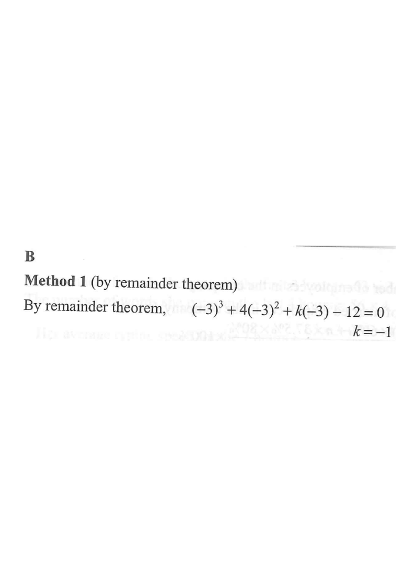

HKDSE 2012 · Paper 2 · Q4
Polynomials — Remainder Theorem
If $k$ is a constant such that $x^{3}+4x^{2}+kx-12$ is divisible by $x+3$, then $k=$

Figure (original exam diagram)
1Understand what "divisible by $x+3$" means
Let $f(x)=x^{3}+4x^{2}+kx-12$.
"$x+3$ divides $f(x)$" means the remainder is $0$.
Hint: the divisor is $x+3$, so the zero of the divisor is $x=-3$.
Factor Theorem
\(\text{If } (x-a) \text{ is a factor of } f(x),\ \text{then } f(a)=0\)
Since \(x+3\) is a factor, substituting \(x=-3\) must give zero.
2Apply the Remainder Theorem
The remainder when $f(x)$ is divided by $x-(-3)$ is $f(-3)$.
For divisibility, $f(-3)=0$:
\[ f(-3)=(-3)^{3}+4(-3)^{2}+k(-3)-12=0. \]
Rule: remainder of $f(x)\div(x-a)$ is $f(a)$; here $a=-3$.
Remainder Theorem
\(\text{Remainder of } f(x)\div(x-a) \text{ is } f(a)\)
A factor leaves remainder \(0\), so \(f(-3)=0\) for this \(f(x)\).
3Evaluate the powers and simplify
\[ (-3)^{3}=-27,\qquad 4(-3)^{2}=4\times 9=36. \]
So
\[ -27+36-3k-12=0 \]
\[ -3-3k=0. \]
Watch the signs: $(-3)^{3}$ is negative, but $(-3)^{2}$ is positive.
Solving a Linear Equation in One Unknown
\(ax+b=0 \ \Rightarrow\ x=-\dfrac{b}{a}\)
The condition \(f(-3)=0\) reduces to \(-3-3k=0\), giving \(k\).
4Solve for $k$
\[ -3-3k=0 \]
\[ 3k=-3 \]
\[ k=-1. \]
Check: with $k=-1$, $f(x)=x^{3}+4x^{2}-x-12$ and $f(-3)=0$. ✓
Answer: $k=-1$ → Option B
PRACTICESimilar question — try it yourself
Question. Let \(f(x)=2x^{3}-5x^{2}+kx+18\). If \(f(x)\) is divisible by \(x+2\), find the value of \(k\).
Show the worked solution
Step 1. By the Factor Theorem, \(x+2\) is a factor \(\Rightarrow f(-2)=0\).
Step 2. \(f(-2)=2(-8)-5(4)+k(-2)+18=-16-20-2k+18=-18-2k\).
Step 3. Set \(-18-2k=0\), so \(2k=-18\) and \(k=-9\).
Step 4. Check: \(f(x)=2x^{3}-5x^{2}-9x+18\) gives \(f(-2)=-16-20+18+18=0\). \(\checkmark\)
Answer: \(k=-9\)